A vertical farm only makes sense where there is real demand for healthy food. The harder question is how a sealed, fully equipped growing machine is supposed to meet the neighbourhood it lands in. A Halfway Kitchen answers it by staying an incomplete platform: the farm keeps its original function, and invites the city in through a movie theatre and a food court.
A machine that invites its context
The site sits on South Broadway in Los Angeles, ringed by housing and a learning centre rather than by industry. Dropping a closed agricultural box here would produce a neighbour nobody has a reason to enter. So the building is deliberately left unfinished at its edges, and the parts that face the public are the familiar, approachable ones — a screen and a place to eat.
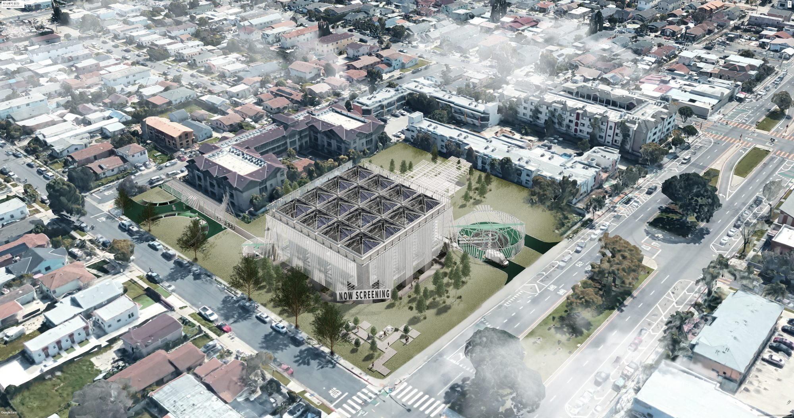
Introduced through a film
Through the movie theatre the vertical farm is introduced without resistance. Sloping seating and a single screen compress the crowd into shared focus; afterwards the Passage of Lingering Impression draws visitors into a meditative walk that lets the film settle and quietly reframes appetite. Only then do they see and order food. The whole sequence — absorption, climax, lingering sway, a slow walk, the first bite — eases food cravings through immersion rather than instruction.
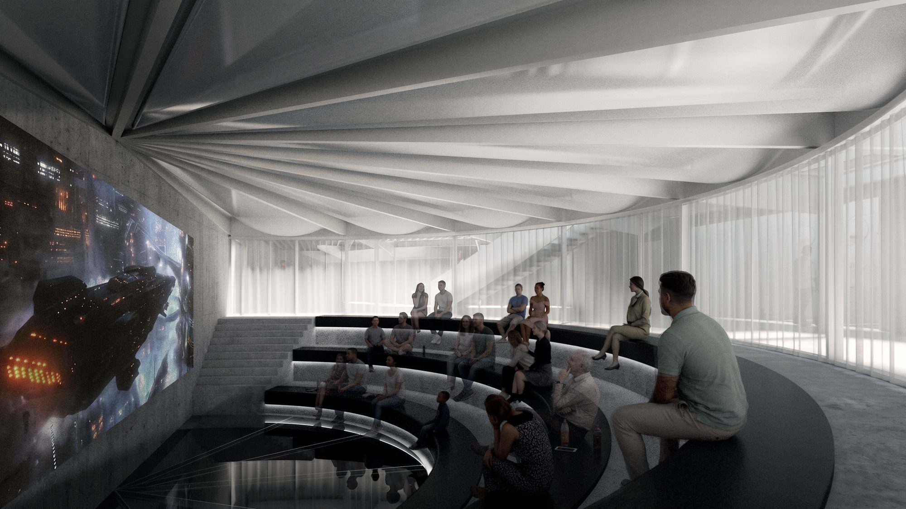
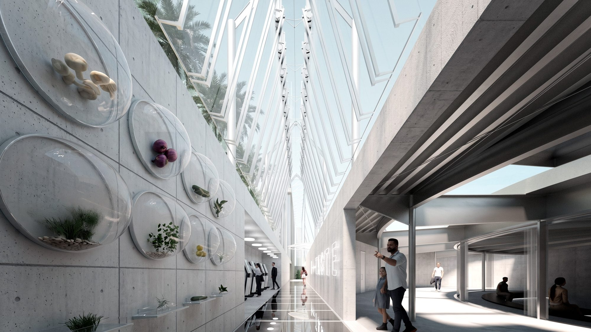
Lifted off the ground
To get daylight down to the lower levels the growing volumes are hung as glass boxes on a sturdy vertical structure, which lifts the farm clear of the ground. What is left underneath becomes the dining place — an ordinary requirement turned into the most extraordinary room in the project.
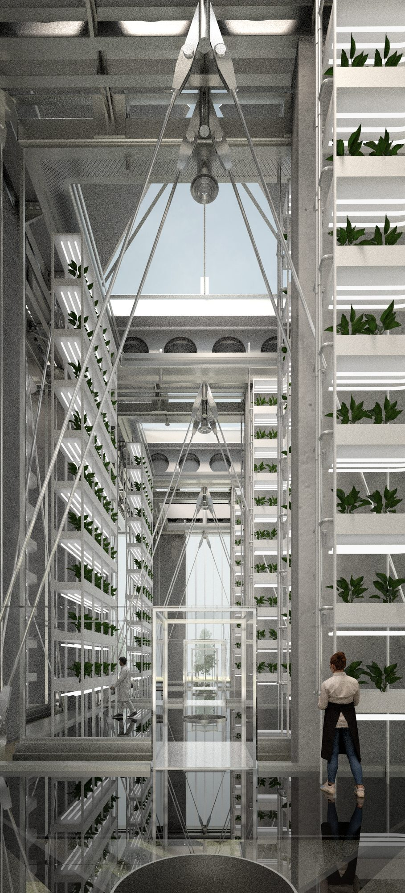
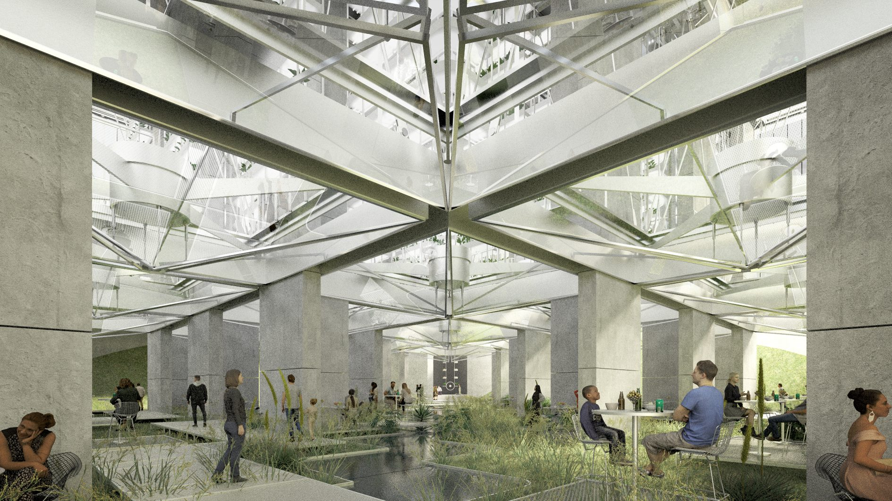
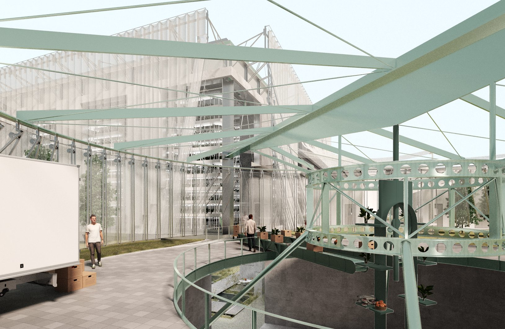
Docking, not tenanting
The kitchens are not built in. Vendors bring their own food trucks, already equipped with their ingredients and tools, and dock at the farm; in return they get access to shared kitchen facilities and fresh produce. Each visit the food is healthy and also different, because the trucks change. Behind this sit the working rooms — cultivation, distribution, filter and hygiene labs, harvest processing and the docking station itself.
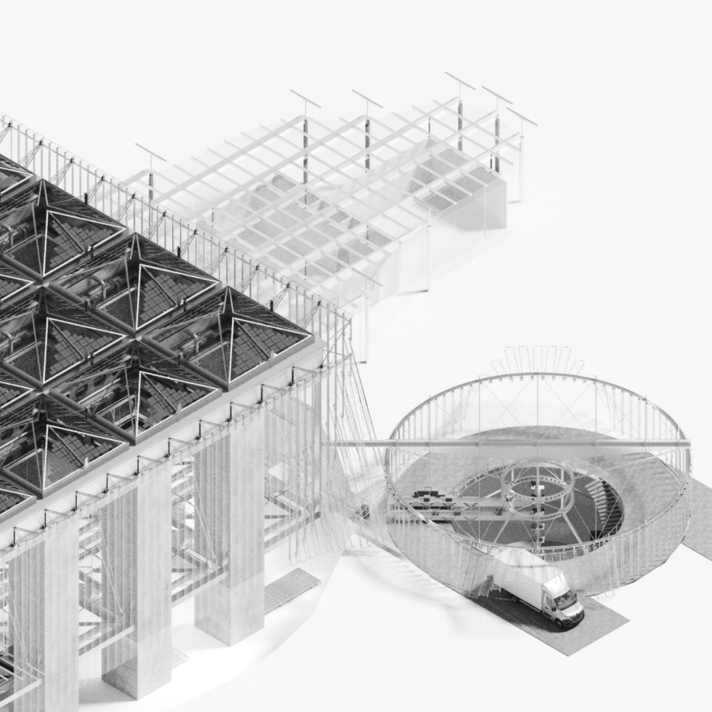
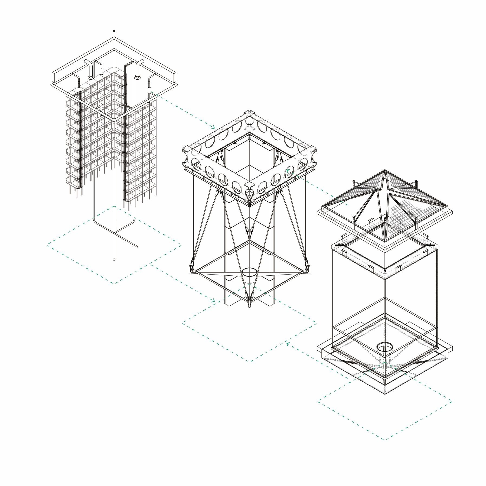
Water, in a dry city
Los Angeles is dry, so rainwater is recycled rather than spent. Rain is collected on the roof and stored in a tank in the basement of the visitor building; when the crops need moisture it is fed back through pipes and ponds. Part of the tank is glazed, so visitors can see the thing working instead of being told about it.
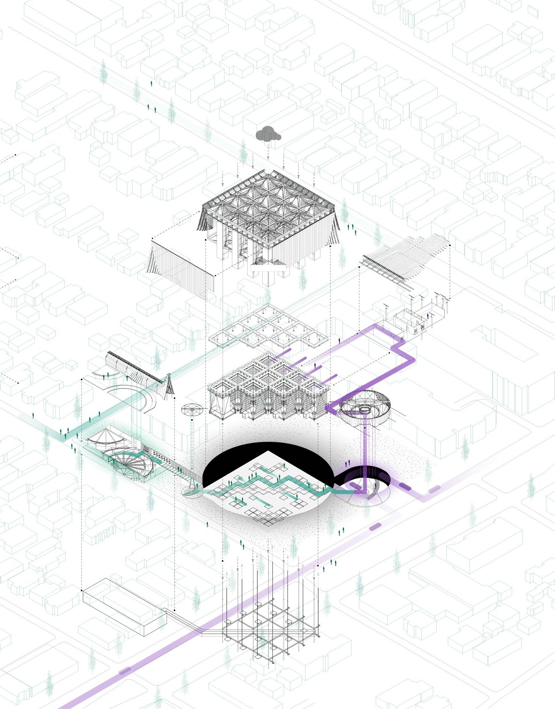
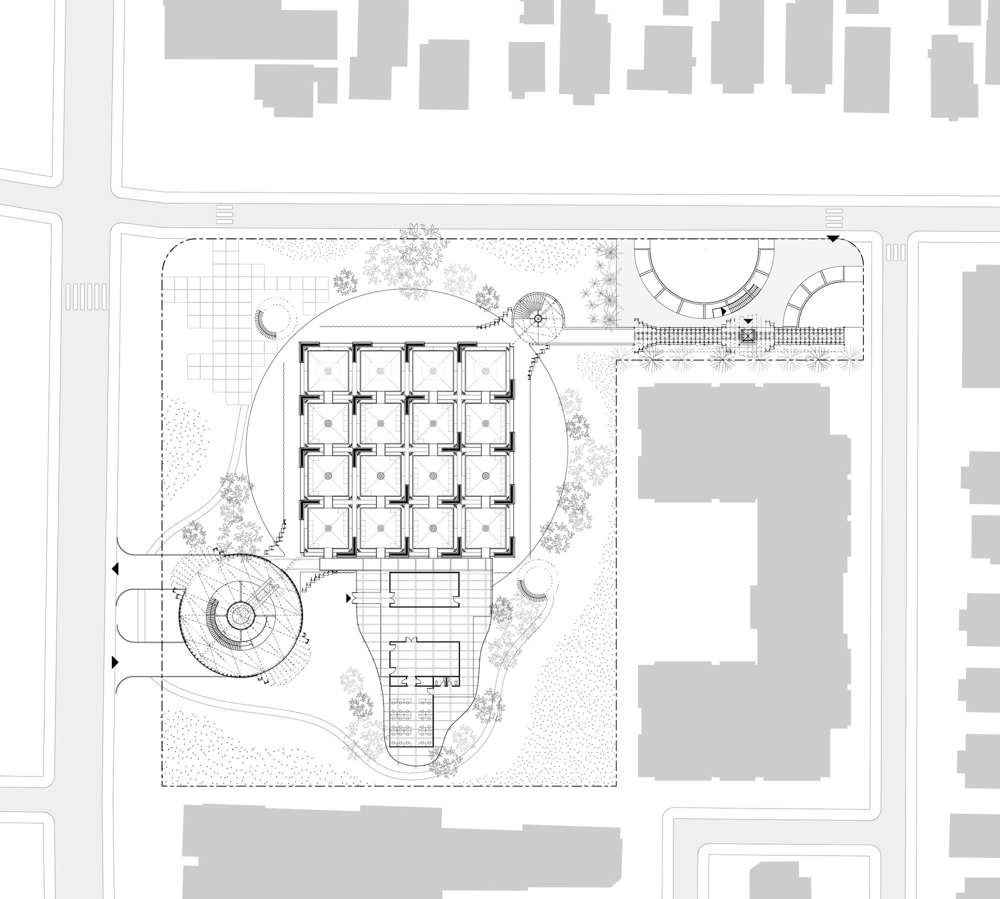
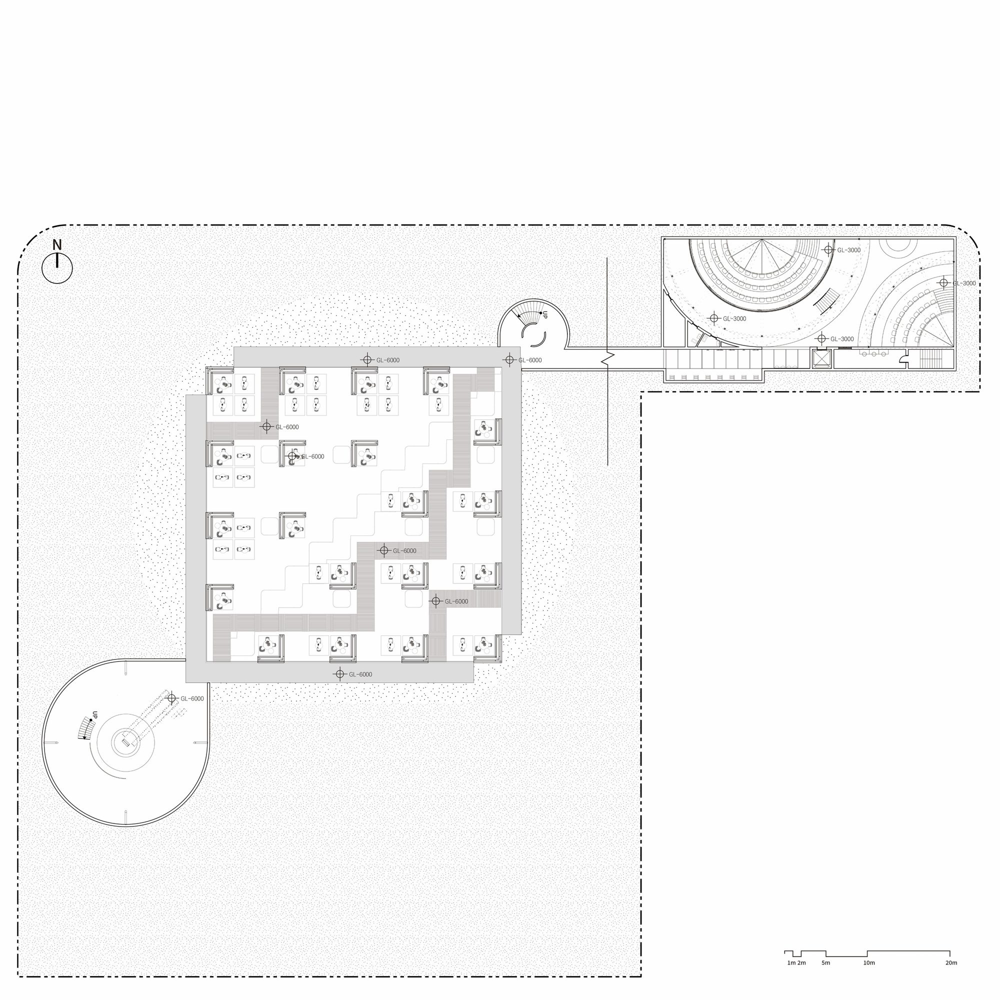
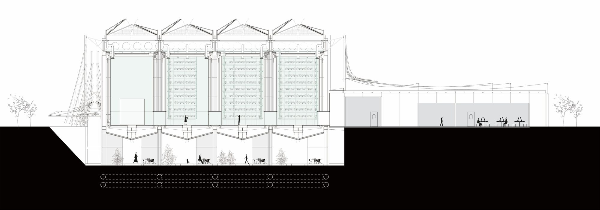